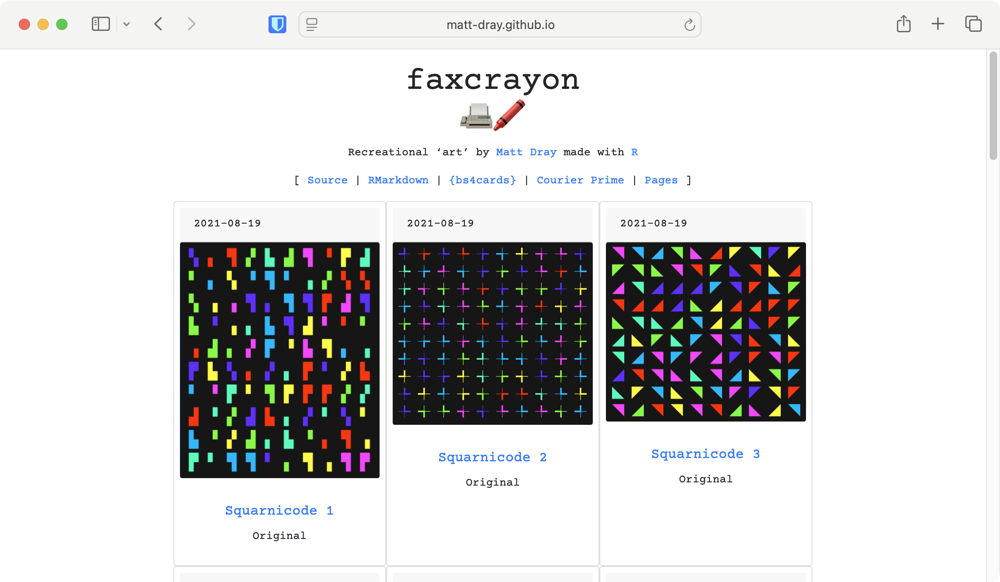
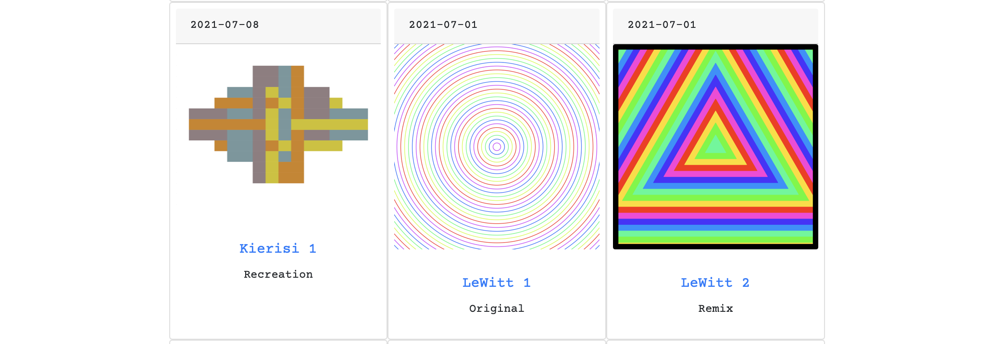

Art is a lie
Turns out you can just put up some pictures on the internet and call it a gallery. No one is stopping you.
Here is a foolproof approach: R Markdown with {bs4cards} to write the content, GitHub Pages to serve it, and a totally rad URL to convince people you’re legit.
{bs4cards}
The {bs4cards} package (available on CRAN) is great because it lets you create customisable ‘cards’ that you can tile on an R Markdown page.
To create a card, you use the card() function with arguments for title, image, text, link, etc. You can put these in a list and pass that to card_grid() to make a grid. Of cards. A card grid.
So, this format could work well to bring disparate information together in one central location, like a blog’s landing page, where a card’s content gives you a preview of post that you can click to visit it.
So I did just that: I made a single page where each card displays an art piece I created with R code for #RecreationThursday, or whatever.
The cards contain the creation date in the header; the ‘name’ of the piece as the card title, which links out to where the code is hosted for recreating it; and in the card body it states whether the image is a recreation, a remix or something original.

You can find the source on GitHub.
GitHub Pages
One of the easiest ways to serve an R Markdown file on the internet is to store it in a GitHub repository, knit it to HTML and then enable GitHub Pages.
You go to the ‘Pages’ in your repository’s settings to enable it and then your HTML is served so that it’s available to anyone on the internet in the form <username.github.io/repository-name/file.html>.
Domain
But that doesn’t make for a terribly exciting URL. Since I’m going to be an internationally-famous and extremely financially-successful artist, it makes sense to improve my online brand with a rad URL.
Where to get inspiration? I’ve tweeted images for #RecreationThursday using the fax 📠 and crayon 🖍️ emojis because I was using my rudimentary skills to create facsimile copies of original artworks. So… fax crayon? Like a wax crayon, but, like, fax?
And the <faxcrayon.art> URL only cost two dollars to buy, so.
There’s a small dance you have to do to make GitHub Pages link to your domain, while your domain provider may themselves require a particular set of settings.
It took half an hour or so for the domain dance to complete, but now the site is available at faxcrayon.art.
Nothing is real
So: {bs4cards}, GitHub Pages and a totally hip URL.
Now I just need to work out how to integrate NFT functionality to the site and quit my day job.
Environment
Session info
Last rendered: 2023-07-17 18:32:26 BST
R version 4.3.1 (2023-06-16)
Platform: aarch64-apple-darwin20 (64-bit)
Running under: macOS Ventura 13.2.1
Matrix products: default
BLAS: /Library/Frameworks/R.framework/Versions/4.3-arm64/Resources/lib/libRblas.0.dylib
LAPACK: /Library/Frameworks/R.framework/Versions/4.3-arm64/Resources/lib/libRlapack.dylib; LAPACK version 3.11.0
locale:
[1] en_US.UTF-8/en_US.UTF-8/en_US.UTF-8/C/en_US.UTF-8/en_US.UTF-8
time zone: Europe/London
tzcode source: internal
attached base packages:
[1] stats graphics grDevices utils datasets methods base
loaded via a namespace (and not attached):
[1] htmlwidgets_1.6.2 compiler_4.3.1 fastmap_1.1.1 cli_3.6.1
[5] tools_4.3.1 htmltools_0.5.5 rstudioapi_0.15.0 yaml_2.3.7
[9] rmarkdown_2.23 knitr_1.43.1 jsonlite_1.8.7 xfun_0.39
[13] digest_0.6.31 rlang_1.1.1 fontawesome_0.5.1 evaluate_0.21